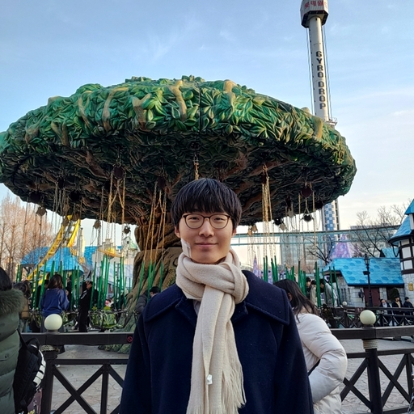

|
Suhwan Choi
I'm an undergraduate student majoring in Physics and Computer Science at Seoul National University. I'm currently a Principal Researcher
at Maum.ai, where I lead the autonomous robotics research division.
|
 |
{kind=link}
Research & PublicationsI work on embodied AI, robotic navigation, and multimodal learning. My research focuses on scaling vision-action pretraining, commonsense-aware navigation systems, and vision-language model improvements. Some papers are highlighted. |
|
D2E: Scaling Vision-Action Pretraining on Desktop Data for Transfer to
Embodied AI
Suhwan Choi*, Jaeyoon Jung*, Haebin Seong*, Minchan Kim, Minyeong Kim, Yongjun Cho, Yoonshik Kim, Yubeen Park, Youngjae Yu†, Yunsung Lee† Under Review project page Scaling vision-action pretraining on desktop data enables effective transfer to embodied AI tasks. |
|
CANVAS: Commonsense-Aware Navigation System for Intuitive Human-Robot
Interaction
Suhwan Choi*, Yongjun Cho*, Minchan Kim*, Jaeyoon Jung*, Myunchul Joe, Yubeen Park, Minseo Kim, Sungwoong Kim, Sungjae Lee, Hwiseong Park, Jiwan Chung, Youngjae Yu† ICRA 2025 (Outstanding Paper Award at NeurIPS 2024 Workshop, 3%) project page A commonsense-aware navigation system that enables intuitive human-robot interaction through natural language understanding. |
|
ESREAL: Exploiting Semantic Reconstruction to Mitigate Hallucinations in
Vision-Language Models
Minchan Kim*, Minyeong Kim*, Junik Bae*, Suhwan Choi, Sungkyung Kim, Buru Chang† ECCV 2024 arXiv Exploiting semantic reconstruction to mitigate hallucinations in vision-language models. |
|
Revisiting Residual Connections: Orthogonal Updates for Stable and
Efficient Deep Networks
Giyeong Oh, Woohyun Cho, Siyeol Kim, Suhwan Choi, Youngjae Yu† NeurIPS 2025 arXiv Revisiting residual connections with orthogonal updates for more stable and efficient deep networks. |
Experience |
Principal Researcher at Maum.ai (Feb 2024 – Present)
|
Machine Learning Engineer Intern at Hyperconnect (July 2023 – Jan 2024)
|
Awards & Honors |
QHack Coding Challenge (2023 and 2024)
|
2023 Quantum Hackathon (2023)
|
NAVER CLOVA AI RUSH 2022 (July
– Sept 2022)
|
Google Codejam 2022 (2022)
|
Open Source Contributions |
|
|
Open World Agents
Built comprehensive multimodal desktop agent framework including optimized data collection tool, standardized efficient data format, multimedia data processing pipelines, dataset management, agent training infrastructure, Python packaging, and CI/CD. |
|
Website source code available on GitHub. |